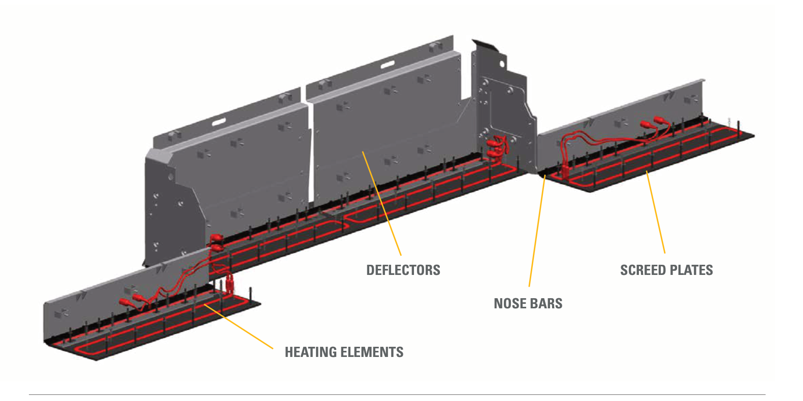
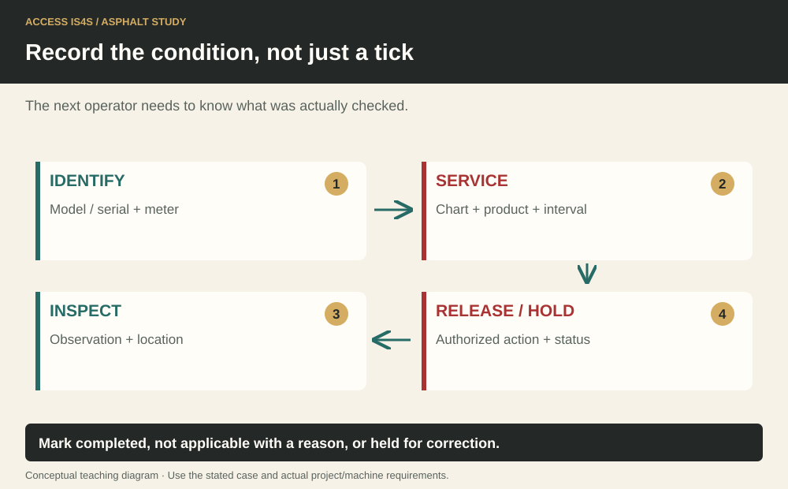

Study chapter · Outline J4
Screed maintenance
Screed maintenance protects plate condition, movement and the quality of the next mat. Use the fitted screed’s service instructions and coordinate shared systems with the paver operator.
Learning step 1
Service lubrication system (greasing)
Identify lubrication points, including thickness-control screws and extension mechanisms where specified. Confirm lubricant, interval, quantity and safe position. Clean fittings and load the grease gun correctly. Centralized systems and optional fittings change the route; do not assume grease at one point reaches every component. Report damaged fittings and protect the work area from excess lubricant.
Screed plates and heating components

Learning step 2
Inspect and clean components as required
Inspect accessible components and the paver systems serving the screed, including hydraulic lines, electrical/heating connections and cooling systems where applicable. Radiator, oil-cooler, battery, plug and dipstick checks may belong to the shared tractor maintenance schedule rather than a separate screed engine. Identify what is actually fitted. Use isolation, cooling and approved access; do not open hot pressure systems or diagnose electrical faults beyond authorization.
Learning step 3
Housekeeping tasks
Remove rubbish, buildup and excess grease from safe access surfaces, controls, steps, decks and any fitted cab/windows. Use compatible products and contain waste. Coordinate cleaning with the paver crew so no one restarts or moves a shared system unexpectedly. Restore guards and account for tools.
Learning step 4
Maintain screed plate
Inspect the screed plate and extension plates for wear, damage, distortion and buildup. Check adjustment and replacement criteria in the actual manual. A scuff or streak in the mat can indicate a plate/setup/material problem; record the pattern and investigate rather than assuming more heat will fix it. Plate replacement and alignment require authorized procedures, support and specified fasteners/settings. Record the condition before and after service.
Record the condition, not just a tick

Try it and explain your thinking
A fictional wear check shows 8.0 mm initially and 6.5 mm now
A fictional wear check shows 8.0 mm initially and 6.5 mm now. Find the loss. Does that establish replacement?
Skills you use: Numeracy, Problem solving.
Identify which maintenance items belong to the actual screed and which to shared tractor systems.
Identify which maintenance items belong to the actual screed and which to shared tractor systems.
Skills you use: Reading, Writing.
Draft a safe cleaning handover between two operators.
Draft a safe cleaning handover between two operators.
Skills you use: Communication, Collaboration.
Show the skill in supervised practice
Machine/model/serial or classroom case: __________ · Manual/procedure and revision: __________ · Date/location: __________ · Learner/observer: __________
The outline specifies a minimum 80% checklist result for this task. Score the 3 task criteria out of 6; require at least 5 points and all critical items passed. This local scoring rubric operationalizes the checklist; it is not a separate certification. A critical failure means hold, correction and reassessment regardless of the numerical result. Use safe simulations for classroom reasoning; actual operation requires the selected equipment, approved conditions and competent supervision.
| What the observer checks | Result | Evidence |
|---|---|---|
| Critical: Safe access, surroundings and communication maintained. | Pass / hold | Observation: __________________ |
| Critical: Required energy, heat, movement and public-access controls maintained for the actual task. | Pass / hold | Observation: __________________ |
| Service actual lubrication points and shared systems safely. | 0 / 1 / 2 | Evidence/help: ________________ |
| Inspect plate condition against manufacturer criteria. | 0 / 1 / 2 | Evidence/help: ________________ |
| Clean, restore guards and complete a service/defect record. | 0 / 1 / 2 | Evidence/help: ________________ |
Actual conditions and support: __________________________
Feedback, next practice and authorized release/status: __________________________
Sources and further reading
- SkilledTradesBC. (2016). Asphalt Paving/Laydown Technician program outline, J4, printed p. 86; source PDF pp. 88–88.
- Caterpillar. (Various editions). Paving, compaction, milling and machine publications; identify the applicable document/model. Open publication.
- WorkSafeBC. (Web snapshot: October 30, 2026). OHS Regulation, Part 10: De-energization and Lockout. Open publication.
- LeeBoy. (2026). 8680 Commercial Paver: Safety and operations manual (1033428-SOP). Serial 365152 and above. Components pp. 3-1–3-32; operation pp. 4-1–4-68; maintenance section 5. Open publication.
Figure-specific pages, editions and original contributors are credited beside each image. Current project requirements and the matching machine instructions determine practical use.